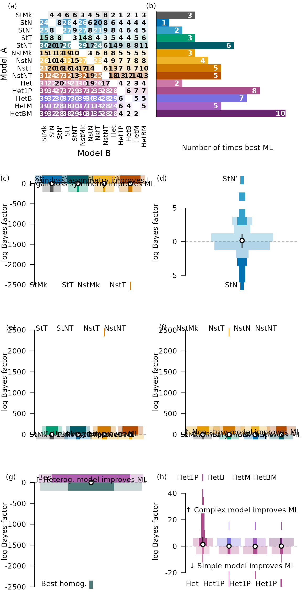

vignettes/model-pairs.Rmd
model-pairs.Rmd
library("neotrans")
hetModels <- c("hg_ki", "hg2_ki", "hg_b_ki", "hg_m_ki", "hg_bm_ki")
rmModels <- c("rm_by_n_ki", "rm_by_t_ki", "rm_by_nt_ki")
statModels <- c("by_ki", "by_n_ki", "by_nn_ki", "by_t_ki", "by_nt_ki")
nsModels <- c("ns_ki", "ns_n_ki", "ns_t_ki", "ns_nt_ki")
homModels <- c(statModels, nsModels)
kiModels <- c(statModels, rmModels, nsModels, hetModels)
nonRm <- setdiff(kiModels, rmModels)
marginals <- GetMarginals(KiProjects(), kiModels)
stdErr <- attr(marginals, "stdErr")
bestModel <- table(nonRm[apply(marginals[nonRm, ], 2, which.max)])
wd <- 6
mfr <- c(4, 2)
spaceForOma <- 1.02
OutputPlot("modelCmp", wd, wd * mfr[1] / mfr[2] * spaceForOma, function() {
layout(rbind(c(1, 1, 2), c(3, 3, 4), c(5, 5, 6), c(7, 7, 8)), widths = c(1, 1, 2))
par(oma = c(0, 0, 1, 0))
ModelHeatmap(marginals[nonRm, ], stdErr[nonRm, ])
Panel(1, 4, -1.6)
counts <- bestModel[rev(nonRm)]
barCol <- ModelCol(rev(nonRm))
names(counts) <- ModelLabel(rev(nonRm))
par(mar = c(4.71, 0.6, 0.3, 0.4), cex = 0.86)
bp <- barplot(counts,
horiz = TRUE,
col = barCol,
border = NA,
las = 1,
space = 0,
axes = FALSE,
yaxt = "n",
xlab = "Number of times best ML",
xlim = c(0, max(counts) * 1.1),
ylim = c(0.5, length(counts) - 0.5))
text(x = counts - 0.4, y = seq_along(counts) - 0.5, labels = counts,
col = "white", font = 2)
abline(v = 0)
Panel(2, 0, -1.6)
par(mar = c(2, 4, 2, 0.4))
SpindleCompare(
modelA = c("by_t_ki", "by_nt_ki", "ns_t_ki", "ns_nt_ki"),
modelB = c("by_ki", "by_n_ki", "ns_ki", "ns_n_ki"),
marginals = marginals,
stdErr = stdErr
)
Panel(3)
text(2.5, 13, expression("\U2191 Free" ~ italic("t") ~ "improves ML"))
text(2.5, -9.6, expression("\U2193 Fixed" ~ italic("t") ~ "improves ML"))
SpindleCompare(
modelA = c("by_n_ki", "by_nt_ki", "ns_n_ki", "ns_nt_ki"),
modelB = c("by_ki", "by_t_ki", "ns_ki", "ns_t_ki"),
marginals = marginals,
stdErr = stdErr
)
Panel(4, 4)
text(2.5, 70, expression("\U2191 Free" ~ italic("n") ~ "improves ML"))
text(2.5, -16.35, expression("\U2193 Fixed" ~ italic("n") ~ "improves ML"), xpd = NA)
SpindleCompare("by_nn_ki", "by_n_ki", marginals, stdErr)
Panel(5)
SpindleCompare(
modelA = c("ns_ki", "ns_t_ki", "ns_n_ki", "ns_nt_ki"),
modelB = c("by_ki", "by_t_ki", "by_n_ki", "by_nt_ki"),
marginals = marginals,
stdErr = stdErr
)
Panel(6)
text(2.5, 48, expression("\U2191 Non-stnry model improves ML"))
text(2.5, -20, expression("\U2193 Stationary model improves ML"), xpd = NA)
hetMar <- marginals[hetModels, ]
homMar <- marginals[homModels, ]
bestHet <- apply(hetMar, 2, which.max)
bestHom <- apply(homMar, 2, which.max)
hhm <- rbind(
marginals[hetModels, ],
bestHet = hetMar[cbind(bestHet, seq_len(ncol(hetMar)))],
bestHom = homMar[cbind(bestHom, seq_len(ncol(homMar)))]
)
hhSE <- rbind(
stdErr[hetModels, ],
bestHet = stdErr[hetModels, ][cbind(bestHet, seq_len(ncol(hetMar)))],
bestHom = stdErr[homModels, ][cbind(bestHom, seq_len(ncol(homMar)))]
)
SpindleCompare("bestHet", "bestHom", hhm, hhSE)
text(1, 62, expression("\U2191 Heterog. model improves ML"))
Panel(7)
SpindleCompare(
modelA = c("hg2_ki", "hg_b_ki", "hg_m_ki", "hg_bm_ki"),
modelB = c("hg_ki", "hg2_ki", "hg2_ki", "hg2_ki"),
marginals = hhm,
stdErr = hhSE,
width = 0.91
)
Panel(8)
text(2.5, 27.1, expression("\U2191 Complex model improves ML"))
text(2.5, -15.2, expression("\U2193 Simple model improves ML"), xpd = NA)
})